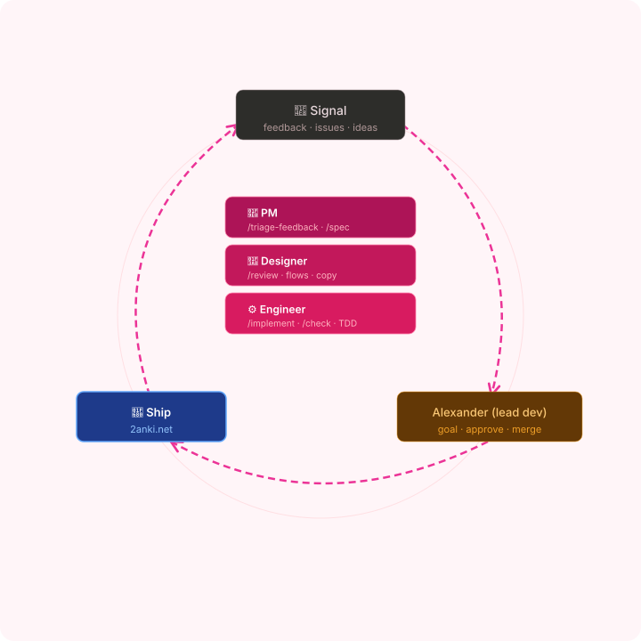

2anki · Claude Code setup · 2026
Programming
the agent
How one repo turns Claude Code from a chatbot into a team member that ships PRs — and can't break the rules. All of it is text + git hooks, in version control.
AA
Alexander Alemayhu
2anki.net · Notion → Anki
Agenda
1
Why a setup at all
The mega-prompt anti-pattern
2
The handbook
CLAUDE.md + 10 path-scoped rule files
3
The team
13 sub-agents — the trio + specialists
4
The enforcement
14 hooks across the lifecycle
5
Steal this
Adopt it in your own repo
1
Why a setup at all
The mega-prompt anti-pattern, and what replaces it
The problem
One giant prompt doesn't scale
Stuff every rule, gotcha, and workflow into one system prompt and it rots: too long to read, impossible to scope, and it can't do anything — it can only ask nicely.
Always-on is expensive
A rule that only matters when editing a migration shouldn't burn tokens on every turn. Load knowledge when the path calls for it.
Advice isn't enforcement
"Never push to main" in prose is a suggestion. The model can forget it at hour three. A hook that exits non-zero cannot be forgotten.
Prose can't delegate
"Get a second opinion" is words. A sub-agent is a real second context with its own model and tools.
The answer: split knowledge across the lifecycle
When to inject guidance → rules. When to enforce it → hooks. When to run a workflow → commands & skills. When to delegate → sub-agents. Each lives in its own file, in git.
Customization as code
.claude/ — the anatomy of this repo
Everything Claude knows about 2anki lives in one folder, versioned alongside the code it governs.
# repo root
CLAUDE.md # constitution — @imports rules/*
.claude/
├── settings.json # wires hooks → lifecycle
├── rules/ (10) # @imported policy docs
├── agents/ (13) # the trio + specialists
├── commands/ (18) # slash-command workflows
├── skills/ (7) # on-demand procedures
└── hooks/ (14) # deterministic guardrails
Rules & constitution
10 + CLAUDE.mdMarkdown policy docs, each row = requirement → do-instead → CWE. @-imported so they're always live.
Agents
13Isolated workers — pm, designer, engineer, plus 10 specialists. Cheap model where it fits.
Commands & skills
18 + 7Repeatable workflows behind a slash, plus loadable engineering procedures.
Hooks
14Shell/Python scripts the harness runs on lifecycle events. They can refuse the action.
By the numbers
What's checked into .claude/
A real repo, not a toy. This is the surface one engineer maintains alongside the product.
The point
None of this is framework. It's markdown, JSON, and shell — readable in a PR, evolving with the code. The next five chapters walk each column.
2
The handbook
CLAUDE.md and the path-scoped rule files
Context engineering
CLAUDE.md is the constitution
One file, loaded every session. It states who we serve, how we work, and the scars not to repeat.
Mission & business
What success means
MRR, churn, ARPU, the 300K-user goal. Every PR is checked: simpler/faster/more beautiful? moves us toward scale? which metric should it move?
Architecture
The layered path
route → controller → use case → service → data_layer. Don't skip layers. Each layer carries its own CLAUDE.md.
Process
How work ships
TDD by default, trio review on user-facing change, conventional commits with a real why body, one PR per feature off main.
Gotchas
The scars
Manual Stripe sync only. Fresh worktree = install first. Notion S3 URLs expire — bundle the bytes. Commit hook eats heredocs.
Path-scoped policy
Rules — knowledge that overrides defaults
10 markdown files, @-imported into CLAUDE.md. Every row maps a foot-gun to the safe pattern and a CWE.
security.md
CWE-mappedSQL injection, SSRF via instrumentedAxios, zip path traversal, secret logging — each with the safe alternative.
testing.md
outside-inMock only the external edge. No truthy asserts, no .only, assert generated SQL for raw-knex paths.
code-quality.md
SonarNo any, lead with the positive branch, no hidden env flags, map rows before res.json().
# excerpt — rules/security.md
| Requirement | Do instead | CWE |
| ----------------- | ------------------ | ------- |
| No knex.raw+concat | pass bindings [id] | CWE-89 |
| No !value for id | value == null | CWE-754 |
| No user URL→axios | instrumentedAxios | CWE-918 |
Also in rules/
sonar · dependencies · email-templates · parallel-pr-coordination · support-confidentiality · browser-attestation · first-time-fix
3
The team
Sub-agents — isolated context, own model, own tools
The trio
A product team, modeled as agents
For any user-facing change, all three run in parallel first — then their input is synthesized before code is written.
pm
opusFeedback → spec, prioritization, metrics. Turns raw customer signal into one-page engineering work.
designer
opusUI/UX, copy, visual consistency. Returns one recommendation, not a menu of options.
engineer
opusImplements the spec, writes tests, opens the PR. Ships.
The kaizen loop · signal → ship

Supporting cast
Specialists — right model for the job
Ten more agents, invoked by name. Haiku audits, sonnet classifies, opus designs and fixes.
conversion-funnel-analyst
sonnetWeekly funnel pull; names the biggest leak landing→signup→upload→paid plus churn cohorts.
prod-incident-responder
opus · worktreeTurns a recurring prod crash into one fix PR with a regression test.
migration-reviewer
sonnetRead-only safety review of a Knex migration: locking, backfill, rollback, kanel.
support-triage
sonnetClassifies inbound .eml into bug / billing / how-to / spam / urgent.
test-writer
opus · worktreeColocated tests for a source file — tests only, never edits source.
dead-code-auditor
haikuRead-only scan for unused exports and unreachable branches. Run quarterly.
+ seo-content · seo-specialist · a11y-reviewer · _trio (shared protocol)
4
The enforcement
Hooks — guardrails at the right moment
Lifecycle hooks
Hooks the model cannot ignore
Scripts the harness runs on lifecycle events. Exit 2 blocks the action · exit 0 passes. This is how a convention becomes unbreakable.
On boot · SessionStart
session-start.sh — branch, last 5 commits, open TODOs.
On prompt · UserPromptSubmit
trio_check.sh — nudge a trio review on feature work.
After edits · PostToolUse
post-write-nudge.py — non-blocking FEATURE.md / test drift nudges.
Before reply · Stop
stop-test-coverage.py — warns if new source shipped untested.
The gate
PreToolUse — eight checks before a Bash call
The heaviest event runs a chain. Any one can refuse the command, so an unsafe push or a sloppy commit never leaves the machine.
PreToolUse → Bash · in series
safety.py block push-to-main & bare git push
pre-bash-curl-pipe.py refuse curl | sh
check-commit-message.py enforce conventional + a real why-body
check-duplicate-commit-message.py reject a repeated subject
check-merge-status.py block merge if any check is FAILURE
check-browser-attestation.py web/src merge needs a browser check
pre-push-typecheck.py / pre-push-format.py scoped tsc + fmt
On every Write / Edit
pre-write-secret-scan.py — a secret is caught before the bytes ever hit disk, not after it lands in a commit.
Wiring & reach
settings.json, plugins, MCP
The wiring file decides what's pre-approved, which plugins load, and how hooks attach to events.
// .claude/settings.json
{
"permissions": { "allow": [
"Edit(src/**)",
"Write(src/**/*.test.ts)",
"Bash(git commit *)"
]}, // no prompt
"env": { CLAUDE_CODE_FORK_SUBAGENT: 1 },
// sub-agents fork the parent
"enabledPlugins": {
caveman, typescript-lsp,
sonarqube, stripe, playwright
},
"hooks": { ... } // lifecycle
}
Permissions allowlist
fewer promptsPre-approve the safe, frequent calls — edits under src/, test writes, git commit. Everything else still prompts.
Plugins
5typescript-lsp (real go-to-def), sonarqube (the rule engine /check can't run), stripe + playwright (read-only).
MCP servers
.mcp.jsonide · github · postgres — typed PR/issue access and read-only local DB inspection. Default to read-only; never point at prod.
Knowledge on demand
Commands & skills — loaded when needed
Workflows behind a slash, and engineering procedures the agent pulls in only for the task at hand. Keeps CLAUDE.md small.
.claude/commands/ · 18 slash commands
- Trio flow — /trio · /spec-draft-pr · /implement · /review-pr
- Status — /check · /pr-checks · /deploy-status
- Growth — /weekly-retro · /triage-feedback · /sales-safari
- Growth — /drive-acquisition · /overnight-prs
- Support — /support-reply · /changelog
.claude/skills/ · 7 procedures
- /tdd — failing test → pass → refactor
- /add-tests — backfill coverage
- /security-audit — CWE sweep of a diff
- /simplify — reuse & dead-weight cleanup
- /verify-completion — did it actually work?
- /systematic-debugging · /revise-claude-md
5
Steal this
Adopt the pattern in your own repo
The recipe
Five moves, in order
It's just text + git hooks. No platform, no lock-in. Start small; grow as patterns repeat.
1 · CLAUDE.md
day oneStack, entry points, three hard rules, and your single worst gotcha. One file at the repo root.
2 · One hook
enforceA single PreToolUse hook for your most expensive mistake. Make the rule machine-checkable.
3 · Allowlist
no promptsA permissions.allow list for the safe, frequent calls. Kills prompt fatigue.
4 · Rules, on demand
@importPull recurring policy into path-scoped rule files. Load knowledge when the path calls for it.
5 · Agents & skills
when it repeatsAdd a sub-agent or skill on the third occurrence of a pattern — not the first.
The throughline
Each scar that bit once becomes a hook or a rule, so it never bites silently again. The setup evolves like code.
Session hygiene
Keep the context tight, the agent honest
The setup does the heavy lifting — but the operator still decides what the agent sees and whether to trust it.
Clear between tasks
/clearA new task shouldn't inherit the last one's context. A 4-hour catch-all session is slow, expensive, and forgets early decisions.
Plan before multi-file work
plan modeRead-only plan → approve → implement. Letting the agent dive into a 10-file change blind means expensive backtracking.
Fork the noise away
fork sub-agentA repo-wide grep dumps hundreds of lines into context. Run it in a forked sub-agent — keep the summary, drop the dump.
Confidence is not verification
diff & testThe agent's "done" is intent, not proof. Read the diff, run the tests yourself. The hooks enforce; you still judge.
Thanks
What to take with you
The whole setup is readable in .claude/ — the handbook, the toolbelt, and the manager, checked into git.
Write the rule down
1Context beats exploration. What the repo knows, CLAUDE.md should say.
Make it machine-checkable
2A hook that exits non-zero is the difference between a guideline and a guarantee.
Right-size the worker
3Haiku audits, sonnet classifies, opus designs. Delegate the noise to a fresh context.
It's a living practice
4Not a one-time setup. Someone owns it the way a CI pipeline has an owner — or it rots.